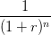
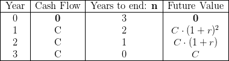
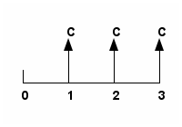
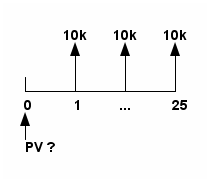
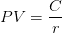
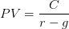

Finances
Created Saturday 02 May 2015
@finances
Video lectures from University of Michigan (Coursera): Folder
Announcements
Welcome!
Hi All:
Welcome to Introduction to Finance! The class has just launched and will be on for the next 15 weeks. This is the eighth offering of the course and it is going strong thanks to all your involvement and the team work at both Coursera and University of Michigan. We have worked to make your experience challenging, productive, and fun. I strongly encourage you to carefully read the Course Syllabus accessible on the left panel and watch the Welcome video, also accessible on the left panel under Video Lectures. You will notice that the Welcome Video is in two parts; an original one created at the first launch of this class almost three years ago, and the other a brief update for the subsequent "editions" of the class that highlights the main changes made by us following student feedback. I chose to follow the tradition in the textbook business of the preface to a new edition highlighting the changes. I feel that you will get a good sense of the (short) history of this class if you watch both videos. I also happen to like the original one. We of course continue to make changes to the course based on feedback from past participants and our own new insights. Thanks to Coursera's efforts, all videos have closed captioning in English; and crowd sourcing has created closed captioning in other languages for some of the videos as well. And this effort is now getting even more emphasis at Coursera. Similarly, the launch of the mobile platform has also increased access to the course worldwide.
I will attempt to expose you to the beauty of finance, but you will learn the most from each other. Use the forums to do so. Owen Henkel has graciously agreed to assist me again in this offering and will monitor the forums regularly. We also have a few new students of mine from UM who will work with Owen. They are all very dedicated and knowledgeable individuals and I am grateful for their help. Their task is challenging because they are expected to navigate the forums but intervene or help out only when really needed. Technical issues will be addressed by Coursera. The Syllabus contains a lot of information about the class; when in doubt about something, refer to it. And, again, use each other as resources to clarify issues ranging from how to use a browser to what is life really all about. [The URL link to the online book by Ivo Welch keeps changing and does not work on some browsers. I have tried several times to change it, but problems persist. In case you experience problems, please just google his name and you will be able to get to the site of his online book.]
This course has a lot of assessments/assignments because that ultimately is the only way to learn. I therefore use problems to motivate all the work I present in the videos. The assignments are by design not easy, though some questions are clearly easier than others. I encourage you very strongly to learn from each other but not to share or look for answers to the assignments or the final exams; it really does not help our learning.
You must recognize that even though finance appears to be very precise, it is ultimately an art form. Thinking through a problem/situation is therefore key before you try and "solve" it. Focus on the framework and use the problems to reinforce your understanding of the same.
Most importantly, keep smiling, especially when things get tough. Learning happens when you are happy. And, ultimately, happiness is a state of mind that is largely under our control.
The First Week
Hi All:
The first week of the course is over. I hope it has been an exciting experience for all of us. Our team has been monitoring the forums and keeping me updated. And, of course, the Coursera team is vigilant and managing multiple courses.
I want to emphasize a few things before getting into the content that we are working on. First, please participate in the forums and learn from each other. I believe that a teacher's role is more like a mentor, and that learning happens in many different ways. While it is ultimately a personal experience, we need to learn from each other. For example, we can teach each other a lot about the right approach to solving problems, without sharing the "solutions." Second, I want to clarify the structure of the class, again. I will release two weeks' worth of videos, related materials and assignments at a time, but then give one week of assimilation each time as well. Finally, a clarification about the grading scheme; to get a certificate you need to score a minimum of 70% on 5 out of 9 assignments and a minimum of 60% on the final. You have two attempts at each, and we automatically choose the higher score. You of course still have some time to sign up for the Signature Track (ST). I want to emphasize that this decision is entirely voluntary.
Now for some content-related stuff. The first week of videos (or chapter one of the videos) was relatively easy. This is by design so that you familiarize yourself with the issues we will tackle and the vocabulary of finance. Please do the assignment as you go along, even though it is not due for a while. Finance is all about the real world and practice is the main way we learn this stuff. This next week covers TVM, spreadsheets and, yes, another assignment. I recognize that some questions in the assignments are challenging. They are supposed to be, and this will be the pattern throughout the course. I believe that eventually no one can teach someone else; we can just hope to coach/nudge each other to learn. [As you work your way through this course, you will probably avail of other resources. As I have indicated earlier, Ivo Welch has a free book accessible on the web; he has advised me that editions 2 or 3 are improved versions of his book. So please refer to these if you choose to visit his site. Of course, all the free materials are only accessible on the web and should not be downloaded, circulated or redistributed.]
Talking about coaching, I must emphasize an important generic aspect of the assignment questions; they appear difficult because real life is messy and ambiguous and like one big "word problem." I know you will probably not realize it until you have done enough applications, but if you understand the fundamental building blocks I try to emphasize in class, any problem you see on the assignments or beyond is simply a combination of these same blocks. For example, I want you to fully understand what a loan is; and some questions in Assignment 2, though seemingly difficult, are very similar to the loan example I do in class. The difficulty arises in taking a real world problem and breaking it up into pieces that you can apply the building blocks to; so, in a very concrete sense, finance helps you make sense of a seemingly complicated world. But you have to practice to see the various combinations of blocks in various applications; draw a time line, understand what is going on, and then try and "solve" the problem. [The reason for the quotes is because looking for the right answer is not what usually empowers us; it is the approach that matters. In any event, there are really no right answers in life, just thoughtful versus knee-jerk ones.]
On a more practical level, and regardless of the problem in the assignments or elsewhere, remember that value always comes from the future (not the past, unless it affects the future); and though we typically make decisions today, learn to time travel on the time line. Talking about time lines, use excel to solve at least some of the problems without using the built in formulae/functions. And watch Matrix! If you understand that movie, finance will be a piece of cake.
While I may make all of this sound easy, it is not. Education, if done right, is an investment and not consumption. And often we do not invest because it takes effort and is painful; and so does loving someone. But only investments allow you to enjoy life for many years. I am confident that you can learn this stuff; if I could, so can you.
Module 1: Assimilation
Hi All:
These past two weeks we have been exposed to both the concepts and practical applications of TVM. While I try to de-emphasize the role of calculations, it is only to make us focus on what is important -- the framework. But I strongly encourage you to use spreadsheets once you understand what is going on; and doing some problems without using the built-in formulae is actually quite useful.
We are following every two weeks of material with one week of catch up time, time for assimilation, and time to complete the two assignments. As you do the assignments, please read the questions carefully before answering them. Most of the questions involve multiple steps and you need to make sure you are working through all the steps. Given the large number of students in this class, we have to use technology to do all the grading. We however have tried to give you partial credit wherever possible. This actually has led to confusion among some of you about your scores; just because you get a green check mark next to a graded question does not mean that you scored full points. In spite of this, we would rather give you partial credit than not. We are in fact trying to think through ways in which we could make the grading more informative for you. The assessment part of MOOCs classes is very time consuming for people offering these classes; among other things, because of copyright issues we cannot simply take questions from textbooks. We have to create multiple versions of our own questions and figure out ways to break them down and have them graded using technology. I always create my own assignments and exams anyway. This however also means that while learning from each other is key and is encouraged, please do not share answers to questions. Needless to say, it defeats the purpose and the forums are therefore monitored. We too will not post answers to the questions we have created, but we will post a way to approach the most difficult problem in each assignment after the due date.
I hope the first two weeks have been fun and productive. Finance is a way of thinking and the only way to make it part of your being is by practice. So do the assignments and think through what you are doing.
One last, but potentially important, issue. At the beginning of every week's worth of material I recap the previous week. I have therefore already released the first video of week 3, titled 3.1 Recap of Week 2.
The Next "Module"
Hi All:
These past three weeks we have been exposed to both the concepts and practical applications of TVM. While I try to de-emphasize the role of calculations, it is only to make us focus on what is important -- the framework. But I strongly encourage you to use spreadsheets once you understand what is going on; and doing some problems without using the built-in formulae is actually quite useful.
As promised, I am releasing the next block of two week's worth of material. I had already released Video 3.1 Week 2 Recap.
This block of content is all about decision-making criteria; an extremely important topic, in my view. Value creation is not easy, but a surprisingly large fraction of us use decision criteria that are myopic and may actually be value-destructive. This block, two weeks' worth of video and related assignments, will expose you to some of the fundamental reasons why some firms are repeatedly able to create value, while others do so for only short periods of time. Some of the calculations may seem easy and mechanical; but that is partly because these are simple extensions of what we have already learned. But understanding what the various widely used criteria really mean, and why some criteria are better than others, are the really important lessons here. And of course we again attempt to introduce everything with practical applications.
One final, but important, issue related to this next block of time. In the last set of videos, we will spend some time on the estimation of cash flows. This is an important component of project analysis, but requires an exposure to accounting. Since we do not have enough time to cover all the details, and the fact that accounting conventions vary across different countries, I focus on the most important cash flow estimation principles. I however strongly recommend that you take a class in accounting and/or learn it on your own if you want to know more about cash flow estimation. Accounting is the language of business and some exposure, beyond this class, will be helpful.
Also, although I do cover all the specifics in class, to help you execute some of the cash-flow based assignment questions, we have prepared a Sample Cash Flow Template that I have posted as a note. The note uses a fairly rich example to demonstrate the creation of a cash flow model, but realize that every template is just that. It is a guide, not something to be used in all situations without figuring out what the situation demands. Having said that, the example tries to capture the main elements of the cash flows of most businesses. I therefore believe that you will find it very useful to recreate the example in a spreadsheet using all the notes provided in the template.
Finally, as you do the assignments, please review the instructions carefully. Since we have so many students, all assignments are graded electronically. We have tried to repeatedly highlight the various conventions that you need to use in entering your answers; typically at the beginning of each assignment and we try to repeat them in every question. We are reviewing all questions, again, but meanwhile, when in doubt, review the Syllabus, especially pages 5-7, sections titled "Some Conventions" and "Important Guidelines."
I know that videos and assignments can get to be a lot of work. But if you stay focused on why you are doing specific things, it all will make sense. The beauty of finance is that it all fits together.
Gautam
Sun 22 Feb 2015 9:00 PM PST
Module 2: Assimilation
Hi All:
This week is the week to assimilate the module 2 material and to finish up Assignments 3 and 4. The past five weeks have been a lot of work on TVM and decision-making. I know that the pace of the class is fast, and some of the assignment questions are difficult, but I want you to be exposed to the fundamentals of finance. That means we will have to continue to keep moving at a brisk pace.
Having said that, and based on the the activity in the forums, I would like to make some suggestions. I hope these are helpful to you. The first is a simple suggestion, but sometimes can be tough to follow. Please read the instructions provided in each assignment as well as in the syllabus on how to input your answers, especially when you have to input numbers. Do not use symbols, and input the numbers you arrive at. Given that you could be rounding off at various steps, the grading is set up to accept a range of answers close the correct ones. And be patient before hitting the submit button. There is no hurry here. Second, and more important, is the idea of breaking each problem up into bite-size pieces. Draw timelines and follow conventions that are needed to place numbers on the same; for example, unless otherwise specified, cash flows occur at the end of a period. To help you think through problems, I have posted explanations for one of the tougher problems each from Assignments 1 and 2 under the Documents Link on the left hand side of the main page. I am grateful to my assistants at our university for preparing them.
Most of us can remember formulae, etc., or google most of the stuff we talk about in class. But the one thing you cannot google is how to think. These problems are an attempt, and I hope a successful one, at making you think in a logical way. The day we could google how to think, why are we here, and so on, life would probably lose its meaning.
The Next Module: Bonds & Stocks
Hi All:
The past six weeks have involved a lot of work on TVM and decision-making. The next module (two weeks of videos and exercises) is all about understanding the key ways to finance projects/firms: bonds (debt) and stocks (equity). This whole topic is important both from a corporate and personal standpoint. I will cover the basics and also try and introduce you to real life data using . You will see for yourself how finance is so real and applicable to everything we do. You will also realize why a class on valuation needs to provide some exposure to understanding financial instruments. The good news is that all forms of financing can be viewed as having different combinations of bond- and stock-like features.
As you start work on this module, you may find most of the assignment questions to be simpler; they are, but only because everything eventually is an application of the fundamental building blocks of TVM. I want to caution you to draw time lines and fully understand the question before calculating stuff. Even a minor error in a seemingly simple calculation can create problems. Also, try and use the RATE function in Excel to calculate bond yields. You now know enough about spreadsheets to be able to start using new functions. Remember though that you can always use common sense and algebra to solve any problem.
I recognize that it must be difficult for you to keep up with the workload of this class, what with all your other responsibilities. We appreciate your hard work and hope that it will be worthwhile in the end. Also, there are five assignments still due and many people find some of the later assignments easier than the early ones. This is partly a matter of taste, but also because the learning curve in finance is steep and, once you get the hang of things, life becomes easier.
Module 3: Assimilation
Hi All:
These past two weeks have been about bonds and stocks. I encourage you to try and absorb the material and then attempt Assignments 5 & 6 during the upcoming week. In general, the idea of providing an assimilation week in every module has gone over well, though it has led to an extension of the class. My goal has been to provide you sufficient exposure to key concepts and applications of finance and then let you work through problems to really learn the material. This time around, the problems may appear simpler because ultimately the valuation of bonds and stocks is an application of the core principles of TVM.
As I have indicated earlier, the main goal of this class is to value real assets that produce goods and services. It is however important to understand the valuation of the financial instruments that help finance these assets: debt and equity. As you will see soon, among other things, this help will us understand the theoretical underpinnings and practical measurement of the cost of capital. As an important aside, the understanding of bonds and stocks, combined with our exposure to risk in Module 4, will help us understand the basics of our own personal investment strategies.
So please do spend some time thinking through the issues and doing the assignments as it will empower you to understand the workings of financial markets and help you analyze both corporate and personal decisions.
Risk, Return, and Statistics!
Hi All:
We are past the mid-point of this class. Hopefully we have developed a good sense of how to value projects/ideas or bonds and stocks in a world with certainty. We have talked about risk and also had to deal with it, but mostly indirectly. The next module (and beyond) is in some sense all about risk.
If you recall, I have repeatedly emphasized that there will be times when we will need to cover material that is not typically thought of as finance. But since finance is an applied discipline, apart from economics (its mother discipline) I emphasized that accounting (the language of business) is important to understand. We covered some general principles of cash flow estimation but, to really understand all details of this topic, you need to take a class on accounting (ideally for the region of the world you are situated in). I believe this class provided you sufficient exposure to the issues that you need to worry about.
To deal with risk, we have to understand statistics. To me, there is really no distinction between the two. The next module is essentially a crash course in statistics and risk, clearly again at a fundamental/introductory level. The good news is that finance is so awesome that you will enjoy learning statistics within its context. Our exposure to statistics is driven by a need and therefore we will be focused on certain aspects of statistics, which is a huge and growing field. I hope you will choose to learn more on your own, either through an online class or via the traditional route or on your own. I encourage you to do so because data are everywhere and we need to understand statistics to even begin to comprehend the world around us. Our beliefs are influenced by data, but most data we are exposed to are anecdotal, and an understanding of statistics is critical to figuring out what the data are really telling us.
This module is all about understanding statistics and risk, and the relation between risk and return. This whole topic is very important to figuring out the appropriate discount rate for a project/firm/stocks/bonds. As you start to work on this module, and if you have not been exposed to statistics before, I strongly encourage you to review and do the problems in the Note titled Review of Statistics. I also encourage you to use built-in statistical functions in spreadsheets to do these problems before attempting the assignments. The good news again is that you can easily do all calculations using the formulae, and without using spreadsheets. But once you understand the formulae it is very useful to use spreadsheets to do the calculations.
As you work on the assignments, you may find most of the assignment questions to be simpler because we are covering the basics of statistics. And many questions therefore are about calculating various things. I want to caution you however to be careful especially when the issue raised in a question relates to interpreting data rather than just calculating stuff.
I encourage you to keep working hard; after this module we will be putting things together to develop a holistic understanding of valuation. I also want to address an issue that has been raised in this class and all other online classes. While you will get a certificate if you fulfill all the requirements laid out in the syllabus, you may choose to learn parts and/or all of it at your own pace with (or without) submitting assignments. The class will be open to all of you for a total of 15 weeks regardless.
Module 4: Assimilation
Hi All:
This week is the time to assimilate the module 4 material and to finish up Assignments 7 and 8. The past two weeks have been a bit different in that we have focused exclusively on risk and return. This is an extremely important aspect of valuation because understanding risk, how to measure it, and how it determines the cost of capital are all essential to valuation. It is one of the places in the course, however, that requires us all to take a little detour and brush up or learn Statistics. Although we do not need to know a ton of Statistics for our current purposes, it is a field that is becoming more and more important in life. This trend is actually very good because the best way to make decisions is to be data-driven rather than opinion-driven. However, to be able to comprehend what the large amounts of data are trying to tell us, we need to learn Statistics. I would therefore encourage you to use this week to really understand the few statistical concepts we have introduced in this class and use them to do the Assignments. At a future date, when you have the time and the inclination, do take a class on Statistics either at Coursera, another online portal, or at a regular college. The good news is that parts of Statistics can be learned on your own as it is very structured and logical.
Last Module: The End is Close!
Hi All:
I cannot believe it, but I have just released the last module for the class. This module is unique in multiple ways. The first set of videos try to give you an overall sense of valuation. In line with this goal, there is a “mega” example at the end, and I pause after every question related to the example. You will therefore find the video material broken up into many more segments than usual for our class. Please go through the complete example, testing your knowledge before viewing how we do it together. Assignment 9 relates to this material, but with an important difference. We are trying to put together stuff we have learned in this entire class and therefore you need to revisit most of what we have learned. Another important and related issue is that thinking through a problem is even more important in this assignment and in life in general. This module, more than any other, reflects the fact that finance is more art than science; or, once you understand the science, it is largely the art that helps you make good decisions. It is natural to want to jump to calculate stuff; but thinking before jumping is important. Once you think through the issues, the calculations become quite simple; again, not just here, but in life as well.
The final set of videos, following the Valuation stuff, have two main goals: reflecting on what we have learned, the key issues, and then what else you may want to learn via formal classes (F2F or online), or on your own, based of course on your personal interests and goals. Not surprisingly, finance plays an important role there as well. There is no corresponding assignment for these videos because you need some time to review stuff for the final.
I will make the final available on May 4, 2015. At this time I want you to be aware of a few things about the exam. You will have two attempts at the final as well, and you will need to score at least 60% on one of them to qualify for a certificate (in addition to scoring at least 70% on 5 out of the 9 assignments). But each attempt at the final will be timed. To accommodate your busy schedules, we will allow you two weeks to attempt the exam, with the last day being May 18, 2015. While there is no restriction on when you can start the second attempt, you are strongly encouraged to wait and reflect before giving the exam a second shot.
Week 1
1.1 Introduction - why finance
- Finance is the study of Value.
- Value creation has two key components: Time and uncertainty.
- Many things can be valued using a proper framework (enterprises, projects, human capital etc.).
- It is very important to understand that finances is not focused on results, rather on make the adequate assumptions to make decisions about the future.
- The main assumption in the examples is that competitive markets exists: When valuing something, it is necessary to know how similar things are valued.
- Prices are extremely important for figuring out what the value of something should be.
- If prices are not good (they are not in a competitive market), they are not so meaningful.
- There is not a considerable resistance when compared to valuable things (ideas).
- Cash flow relatively easy.
- Every decision involves time and uncertainty.
- Terminology:
- PV: Present value ($)
- FV: Future value ($)
- n: Number of periods (#)
- r: Interest rate (%) r>0 (convention). it is critical to finances.
- Recommended book: theory of interest by Irving Fisher (1930).
- Time lines
- The number periods n is generally expressed in years, as the interest rate r is expressed annually.
- Time always has an effect over value. two values can not be compared directly if they are in different periods.
- This effect is quantified through r. Future Value= Initial Payment + Accumulated Interest
- Compounding is the rate r applied on the accumulated interest (interest on interest) through a number of periods n.
- Risk, largely, is responsible for different interest rates.
1.8 Simple present value PV
- PV is more talked about than FV.
- PV is a little bit more important than FV for decision making.
- The relation between PV and FV is established by the formula:
- According to the formula, the PV factor would be 
- The fact that the PV factor is lesser than one, means that the value of something in the future will become lesser when brought today. this process is called discounting. (r is greater than 0).
Week 2
- There is an emphasis about that the finances is not focused in results (the answers are wrong), rather than procedures, way of thinking and framework (assumptions) to making decisions. It is because finances is about the future (unpredictable).
- Making decision based on multiple payments is more common than on a single payment.
- Annuity is a special type of multiple payments, and is commonly denoted by the letter C (Cash). In excel is identified by the acronym PMT.
- There is general convention about annuity: in time 0 there is not a cash flow (it is supposed that the first payment occurs at the end of first period), thus FV value at time 0 is 0. See the following example:


problem: what will be the value of your portfolio at retirement if you deposit $10 000 every year in a pension fund. You plan to retire in 40 years and expect to earn 8% on your portfolio?
- Using excel formulas, you obtain FV=2.59 million using the $10 000 as pmt, 40 as n and 8% as rate.
- This value is notably greater than 40 payments times $10 000 ($400 000) because of compounding.
- In this case (savings, investment), compounding is helping. However in the case of payments (as a credit) it is detrimental (hurts).
- It is important to clear the following concerns:
- amount of money is defined by user.
- Number of periods is defined by user too.
- Nobody can determine the interest rate (it is about the future).
- Interest rate is determined (choice) by the user, according to the level of risk that he or she assumes in his/her investment strategy.
- Higher the risk, higher the interest rate, but more likely that you are jumping all over the place because of volatility (example: the stock market).
- Lower the level of risk, safer the investment, but lesser the return because of the lower interest rate (example: bonds market).
- the choice of a interest rate should match the investment strategy (preferences of risk) of the user.
problem: suppose you want to guarantee yourself $500 000 when you retire 25 years for now. How much must you invest each year, starting at the end of this year, if the interest rate is 8%?
ans: $6 840.
- The difference between 25 x $6 840 (~ $175 000 with r=0) and 500 000 is the effect of compounding.
- The 8% is coming from the market (externalities). It is high (never reached by a bank), meaning that it implies risk.
- Following the same convention adopted for the FV of annuities, (cash flow $0 at time 0), an analogous example is done for PV:
- In a similar way for FV, it can be deduced that the general formula for the PV of an Annuity along n years is:
Problem 1: how much money do you need in the bank today so that you can spend $10000 every year for the next 25 years, starting at the end of this year. suppose r= 5%. ans: PV= $140 939.45

So, you need to deposit around $141 000 today, in order to get $10 000 each year during the next 25 years (it differs from 25 x $10 000 = 250 000).
Problem 2: you plan to attend a business school and you will be forced to take out $ 100 000 in a loan at 10%. You want to figure out your yearly payments, given that you will have 5 years to pay back the loan.
ans: PMT= $26 380
These payments are $6 380 greater than those without interest rate ($100 000/5 years= $20 000).
- In general, the interest rate of 10% is too high.
- If it is one person in the whole market deciding the interest rate is a monopolist.
- A competitive market benefits the consumer (market for the people, not for few of them).
- It is supposed that 10% is coming from competition (the lowest rate among various choices).
Example II: Loan amortization
Based on the earlier example, the amortization of the loan can be represented by the following table:
- An important thing is that the first row corresponds to the point 0. It is because the first payment (column 3) is done at the end of first period (point 1) and the loan occurs at the beginning of the same period (point 0). Thus, the time line of the amortization is:
- The interest rate (10%) is applied over the pending debt until the beginning of each period (column 2). i.e. column 4 is the 10% of column 2.
- The pending debt at the beginning of period n corresponds to the value of the preceding period (column 2) minus its repayment (supposed to be at the end of period n-1).
- On the other hand, these values corresponds to the calculation of PV of the same annuity and r, changing the number of periods n by the remaining number of periods (i.e. like "move" the point 0 forward). It means for example, that $83 620 (second row) is the PV of the annuity $26 380 at a rate of 10% paid during 4 periods.
- The interest is the price that you pay to use the money.
- Taking into the account that the annual payment remains constant along the timeline, the principal repayment of period n corresponds to the difference between its annual payment and the corresponding interest (column 5= column 3 - column 4).
- You cannot add or multiply over the time because of compounding and the positive interest. It means that the amount that you owe the bank at present moment (PV) is $100 000, which is different than 5 x $26 380.
- All value is determined by standing at a point in time and looking forward.
- The best way to think about decision making is standing at zero and looking forward.
- you cannot make money by borrowing and lending. It means that the bank makes money by the borrowing-lending rates difference.
- Value cannot be created by exchanging money.
- Based on the same situation (a loan of $100 000 at 10% during 5 years), but considering now monthly payments. What are the monthly payment? and what is your real annual interest rate?
- The timeline changed (60 monthly payments).
- Annual interest rate is the same (stated): 10%. but the monthly rate of interest would be 0.10/12.
- PV is the same: $100 000.
- Calculation using excel gives PMT= $2 125
- For the question: How many do you owe after thirty months? you need to calculate PV with
- The effective annual rate (EAR) is the actual annual rate and is calculated using the following relation:
and k is the number of periods in a year (e.g. monthly 12, daily 365, etc.).
- Applying this to the problem gives a EAR of 10.47%. The difference (~0.5%) can be significant if you are borrowing a lot of money.
- A perpetuity a set of payments that are paid forever, with or without growth.
- Examples of perpetuities are the bonds and stocks.
- Bonds are limited in maturity.
- Stocks hopefully goes on forever. A company generally is not created to last a determined period, it is created to last forever (or during a long period of time).
- The PV of a perpetuity is 
- If there is a growth rate (called g), the formula becomes 
- Do not use the formulas blindly.
- this example integrates the examples of time value of money:
- All the variables in this problem is supposed to be decision of person. Even the interest rate of 8% assumes a profile inclined to invest in risky stuff.
- Timeline:
- Between 50 and 60 you spend the amount that you earn (no savings, no consume).
- First we calculate PV1 with pmt= $100 000 n=20 periods, r=8%. answer is $981 815.
- Second we calculate PV2 using PV1 as the known FV with n= 10 periods, r= 8% and no payments. answer is $454 770.
- Finally we calculate PMT using PV2 as the known FV with n= 20 periods, r= 8%. answer is $9 937.
- Note that it is assumed that the annual savings are collected at the end of the each period.
- Analogously, the consuming payments are retired at the beginning of each period from number 61.
Week 3
- The previous problems is developed but considering the following approach: if you want to guarantee yourself $8 000 per month, starting one month after your 60th birthday, how much should you save every month, for the next 20 years, starting at the end of next month. Assume that your investments are expected to yield 8% annually and you are likely to live till 80.
- Now the data that must be inserted in the problem are PMT= $8 000, n= 240 and r=0.08/12.
- The solution sequence is the same.
- PV1= $956 434
- PV2= $430 896 (the compounding is monthly)
- PMT=$731.5 monthly.
- Take into account that 8% is very high.
- More months, more growth.
- The greater the interest, higher the growth.
- There are various ways for assessing the value creation with new ideas (or projects).
- Context building
- start with an idea/project.
- A collection of ideas/projects is a firm/company.
- Value creation only through good ideas/projects.
- How do you determine what is a good idea/project?
- Properties of a good decision criteria:
- Makes sense (benefits exceed costs).
- Unit of measurement (meaning).
- Benchmark obvious (if it is in a good region, by comparison with others)
- Easy to communicate. It is important in order to have the desired decision and to convince.
- Easy to compare with other ideas/projects (even different in nature).
- Easy to calculate.
- Example: Assume and interest rate r= 10%; what is the NPV of this idea?
- The negative sign is extremely important. It is an outflow.
- Consider that most great ideas are actually very intense on the outflow (investment, effort, resources, people, etc.) in the beginning.
- The word discounting is used because the cash flow after first year is brought to present.
- the NPV is very different to present value (it comes after the investment subtraction).
- Cash flows belongs to the project. It is better to understand them as profits, not revenues.
- Cash flows come from what is your sense of the project, and reflects the ability to convert the idea in costs and benefits.
- Where does "r" comes from?. it is critical. r captures the opportunity cost of investing in the project.
- r comes from the next best use of even your own investment on a similar project. So r is not belonging to your project. It is like the return of investing on a competitor.
- When r is defined, you should be thinking like the investor in you or other people.
- NPV is the value that you add to you by your project. It is created by what the competitor could have done (through r).
- The project should be done. You are creating a positive value.
- What if you do not have the resources to do so?: the answer is the market. A competitive market with fair resources alternatives. At this point it is assumed that resources are available (thus, the market is available).
- Value creation is always incremental, relative to a known and similar projects.
- To illustrate that, suppose a existing project with a r=10%, it means that an initial investment of $1 000 in that project would generate a cash flow of $1 100 after one year from now. By the other hand, your project (new idea) offers a cash flow of $1 320 after the same lapse. So, after one year, you have created $220 more than if you were invested in the firs option, which has a present value of $200 (equivalent to NVP).
- value is not created in absolute amounts, value is always created in a relative amount.
- Example:
- When you use excel do not include the investment together with payments!. Excel NPV function is a rarely doing PV of future cash flows. Thus, do not give time 0 information.
- For the calculation of NPV, as the time gets longer, refining the numbers doesn't pay off.
- Do not think that the result of NPV is an exact number nor a right answer (because of uncertainty -it is about the future).
- Using NPV makes sense because it estimates the value at the present time of a value-generating project. (benefits-costs).
- One disadvantage of NPV is that it has an static view of the future (it doesn't have flexibility).
- For the following timeline:
- payback would be 2 years (at the end of second year) you recover all the initial payment.
- supposing that the second payment would be $500 the payback period is 2.1 because the remaining $200 at the end of second period is the tenth part of the third cash flow.
- payback calculation can be carried out taking into account discounting (it is called discounted payback). It is expected that it would be greater than conventional payback.
- Payback (discounted or not) is not a good criteria to use in the context of starting a company or invest in a idea. From the beginning, this criteria assumes a limited lifetime of a project. This premise assumes that capital market exist, and that the money will flow with easily to good projects (no your own resources). However, the use of Payback as decision criteria is extended because of its facility of calculation.
- Comparing projects using this criteria can indicate wrong choices, given that future profits of each alternative (after payback) are ignored. for example comparing the following projects:
- Research projects seems more like project B.